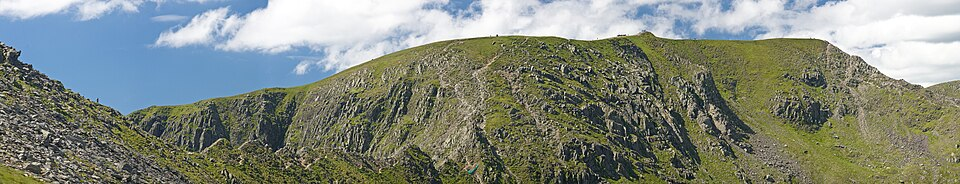
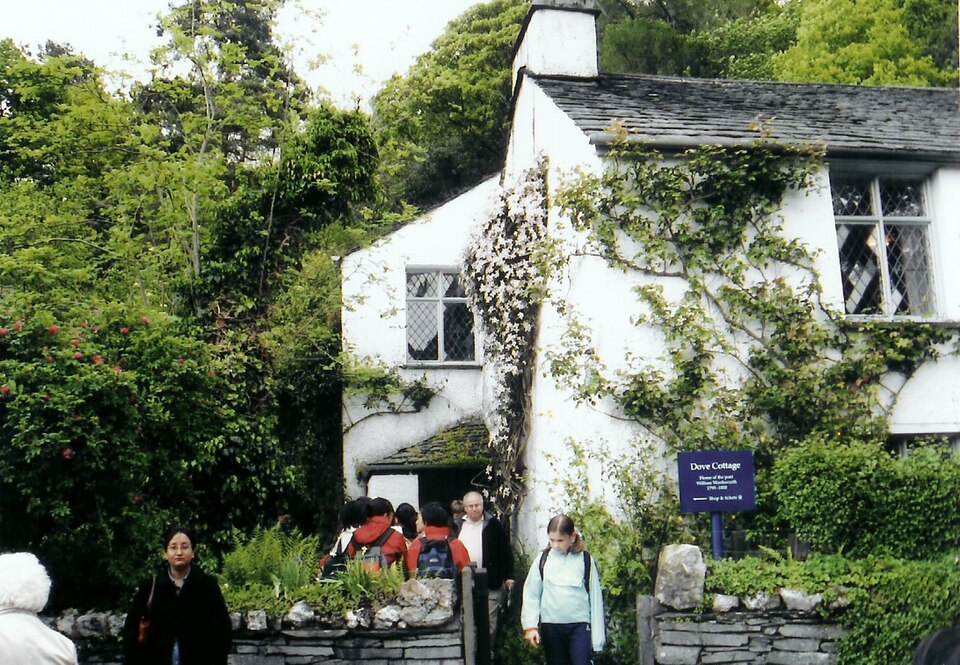

Explore the Fells
The Lake District offers hundreds of miles of footpaths, suitable for walkers of all abilities. Gentle lakeshore routes around Windermere and Ullswater are ideal for families, while more challenging fell walks — such as the ascent of Helvellyn (950 m) or Scafell Pike (978 m) — draw experienced hikers from around the world.
- Routes for all abilities
- Guided tours available
- "Miles without Stiles" accessible routes

Trails & Lanes
The park offers a variety of cycling routes, from quiet country lanes to purpose-built mountain bike trails. Whinlatter Forest, near Keswick, is a popular destination for mountain biking with trails ranging from easy to challenging. E-bike hire is available at several visitor centres.
- Dedicated cycle paths
- E-bike rental available
- Mountain biking at Whinlatter Forest

On the Water
Windermere, Ullswater, Coniston Water, and Derwentwater are popular spots for kayaking, paddleboarding, canoeing, and swimming. Passenger boat services operate on several lakes, offering a relaxing way to experience the scenery.
- Kayaking and paddleboarding
- Passenger boat tours on Windermere and Ullswater
- Equipment hire available

History & Heritage
Beyond outdoor activities, the Lake District offers rich cultural experiences. Visit Hill Top, Beatrix Potter's former farmhouse managed by the National Trust, or Dove Cottage in Grasmere where William Wordsworth lived and wrote. Theatre by the Lake in Keswick offers performances throughout the year.
- Hill Top — Beatrix Potter's home, Near Sawrey
- Dove Cottage — Wordsworth's home, Grasmere
- Theatre by the Lake, Keswick